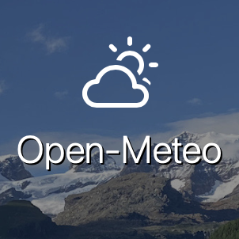

Check out the sources used for our project!
PokeAPI provides detailed information about Pokémon, including types, stats, and descriptions. This data was used to determine Pokémon affinities for specific environmental conditions.
Authentication: No authentication required.
Rate Limits: Unlimited requests, but caching is encouraged.
Endpoints Used: /generation/{id}, /pokemon/{id}, /pokemon-species/{id}
Data Structure: JSON responses with details like name, stats, and abilities.
Error Handling: Common errors include 404 for invalid Pokémon IDs.

The Open-Meteo API was used to retrieve historical and forecasted weather data, helping identify the hottest, coldest, and wettest regions in the world.
Authentication: No authentication required for free tier.
Rate Limits: 10,000 requests per day, 5,000 per hour, 600 per minute.
Endpoints Used: /forecast, /historical
Data Structure: JSON format with weather attributes like temperature, humidity, and precipitation.
Error Handling: Common errors include 429 for exceeding request limits.
The Google Earth Engine Dataset provides global biome data, including vegetation, terrain, and habitat classifications, which refined our Pokémon location matches.
Authentication: Requires Google authentication and project approval.
Rate Limits: 40 concurrent requests per project, 100 requests per second (6000 per minute).
Endpoints Used: /datasets/biome, /datasets/terrain
Data Structure: JSON responses including biome classifications, vegetation indices, and terrain data.
Error Handling: Common errors include quota exceedance (429) and authentication failures (401).